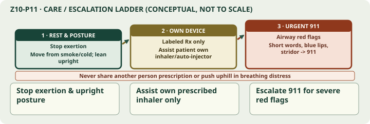

Z10-P11 · Wilderness medicine · New manuscript
Recognize acute breathing distress and escalate early
Identify life-threatening respiratory distress early and position the patient safely without attempting unprescribed medication.
When it applies · Sudden shortness of breath, wheezing, chest tightness, blue lips, or inability to speak full sentences during outdoor activity.
Equipment · Patient's own prescribed inhaler if carried, shelter from smoke/cold wind, and emergency communication.

Actions
- Halt all physical exertion immediately, move away from smoke, cold gusts, or allergens, and let an alert patient rest in their most comfortable upright leaning-forward posture.[T01, M08, D06]
- Ask if the patient carries their own prescribed rescue inhaler or epinephrine auto-injector; assist only with their own labeled device per its instructions—never share another person's prescription medication.[M08, M20]
- Call 911 immediately for inability to speak full sentences, bluish lips/nails, noisy stridor, chest pain, severe wheezing, or failure to improve rapidly after resting.[T02, M08, X09]
Failure recognition · Forcing an asthmatic or short-of-breath hiker to "walk it off" uphill or sharing someone else's unprescribed inhaler.[M08, M20]
Verify · Confirm breathing rate, speech length (full sentences vs single words), skin/lip color, and time of any own-prescription use are logged.[M20, ED]
Stop or change course · Worsening fatigue, confusion, silent chest, or declining responsiveness requires immediate 911 escalation and readiness for CPR.[T02, M03, M08]
Evidence and editorial notes
- D06 · US EPA / AirNow · Wildfires and Air Quality (current web edition)
- Section: Wildfires and Air Quality > AQI Categories and Exposure Reduction · Conditions: Regional or local wildfire smoke plumes impacting air quality
Support: Monitor live official AirNow AQI readings and local health advisories; move indoors with windows/doors closed during Unhealthy AQI levels, limit heavy exertion, and use properly fitted NIOSH-approved N95/P100 particulate respirators if essential outdoor exposure cannot be avoided.
Limitations: Surgical masks, bandanas, and dust masks do not seal against fine PM2.5 wildfire smoke particles; N95s do not protect against carbon monoxide or low oxygen. · Conflicting evidence: None; complements C19 and READY-WILDFIRE.
Editorial note: Grounds AQI smoke thresholds and respiratory protection limits in Z15. · Specialist reviewer: Environmental health and air-quality specialist
Primary source · checked 2026-11-24 - M03 · American Red Cross · CPR Steps and Emergency Response (current web edition)
- Section: Check, Call, Care; Unresponsive Person Without Normal Breathing · Conditions: Unresponsive person not breathing normally; lay responder with EMS activation
Support: Verify scene safety, check responsiveness and normal breathing, call 911 and retrieve an AED if available, and begin dispatcher-guided or trained CPR.
Limitations: Lay text reference cannot substitute for hands-on certified CPR/AED training. · Conflicting evidence: None; aligns with AHA/ARC bystander guidance.
Editorial note: Distinguishes lay activation and dispatcher-guided CPR from advanced life support. · Specialist reviewer: EMS and resuscitation specialist
Primary source · checked 2026-11-24 - M08 · NIH / MedlinePlus · Anaphylaxis (current web edition)
- Section: Recognizing Anaphylaxis and Prescribed Epinephrine Use · Conditions: Sudden severe allergic reaction (hives, facial/airway swelling, wheezing, dizziness, vomiting)
Support: Call 911 immediately for suspected anaphylaxis and assist the patient in using their own prescribed epinephrine auto-injector per its label; symptoms can rebound requiring hospital observation.
Limitations: Lay responders never prescribe or supply unprescribed epinephrine or substitute antihistamines for emergency activation. · Conflicting evidence: None; aligns with AAAAI/MedlinePlus guidance.
Editorial note: Separates assisting with a patient's prescribed auto-injector from lay prescribing. · Specialist reviewer: Allergy/immunology and EMS
Primary source · checked 2026-11-24 - M20 · NIH / MedlinePlus · First Aid Overview (current web edition)
- Section: Lay First-Aid Scope, Kit Readiness, and Documentation · Conditions: Pre-trip kit preparation and remote patient monitoring
Support: Maintain an inspected, unexpired first-aid kit matched to your actual training, keep written patient observations (time, responsiveness, breathing, symptoms, interventions) for EMS handoff, and practice skills in certified courses.
Limitations: Carrying advanced medical instruments without clinical training adds risk rather than capability. · Conflicting evidence: None; aligns with ARC and NPS-K.
Editorial note: Anchors kit sizing, SOAP-style lay observation logs, and scope-of-practice cards. · Specialist reviewer: Wilderness EMS and clinical education
Primary source · checked 2026-11-24 - T01 · American Red Cross · First Aid Steps (current web edition)
- Section: First Aid Steps > Check the scene; check the person · Conditions: Lay responder in United States; assess safety before contact
Support: Check scene safety, responsiveness, breathing and immediately life-threatening conditions.
Limitations: Lay guidance does not replace advanced clinical or rescue protocols. · Conflicting evidence: None; universal first-response opening gate.
Editorial note: Anchors scene-safety-first rule across Z01. · Specialist reviewer: EMS and wilderness medicine
Primary source · checked 2026-11-24 - T02 · American Red Cross · First Aid Steps (current web edition)
- Section: First Aid Steps > Call 9-1-1 · Conditions: Lay emergency response to unresponsiveness, abnormal breathing or severe bleeding
Support: Activate EMS and get needed equipment. Follow dispatcher directions and act within training.
Limitations: Remote locations may delay EMS arrival, requiring sustained stabilization after activation. · Conflicting evidence: None; aligns with NPS-E.
Editorial note: Mandates early emergency activation and dispatcher adherence. · Specialist reviewer: EMS and wilderness medicine
Primary source · checked 2026-11-24 - X09 · CDC · Travel to High Altitudes (current web edition)
- Section: Travel to High Altitudes > Acclimatization, AMS, HAPE and HACE · Conditions: Mountain travel above ~8,000 feet (2,500 meters)
Support: Ascend gradually to acclimatize; recognize Acute Mountain Sickness (headache, nausea, fatigue) and life-threatening HAPE (shortness of breath at rest, cough) or HACE (ataxia, confusion), for which immediate descent and medical care are essential.
Limitations: Physical fitness does not prevent altitude illness; individual susceptibility varies unpredictably. · Conflicting evidence: None; aligns with NPS-MTN.
Editorial note: Core physiological evidence for Z12 mountain-altitude cards. · Specialist reviewer: Mountain medicine and high-altitude safety
Primary source · checked 2026-11-24
Source lineage · NIH MedlinePlus and American Red Cross; new manuscript · Classification · New manuscript.